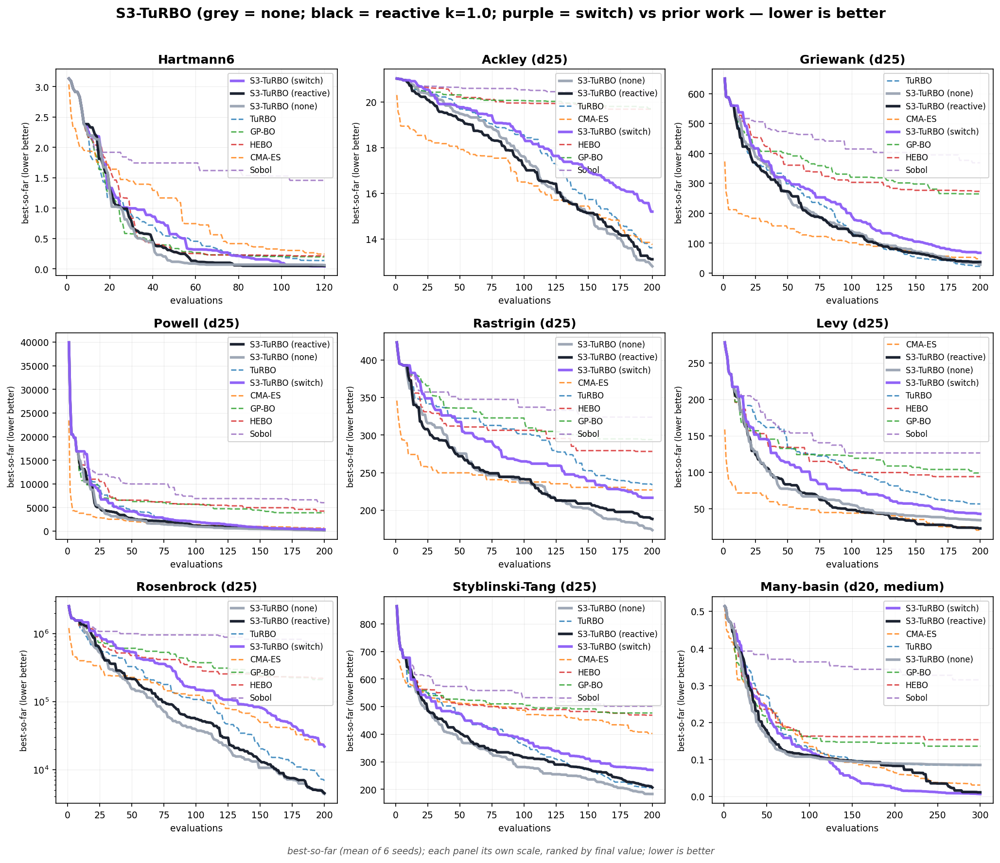
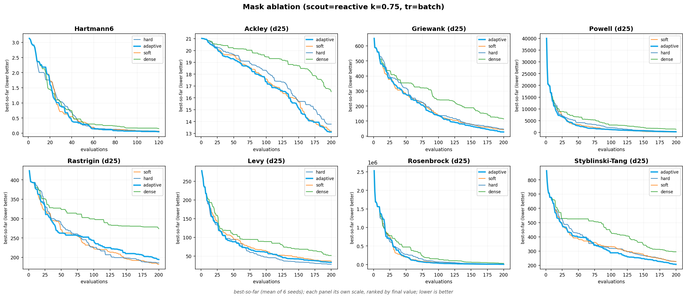
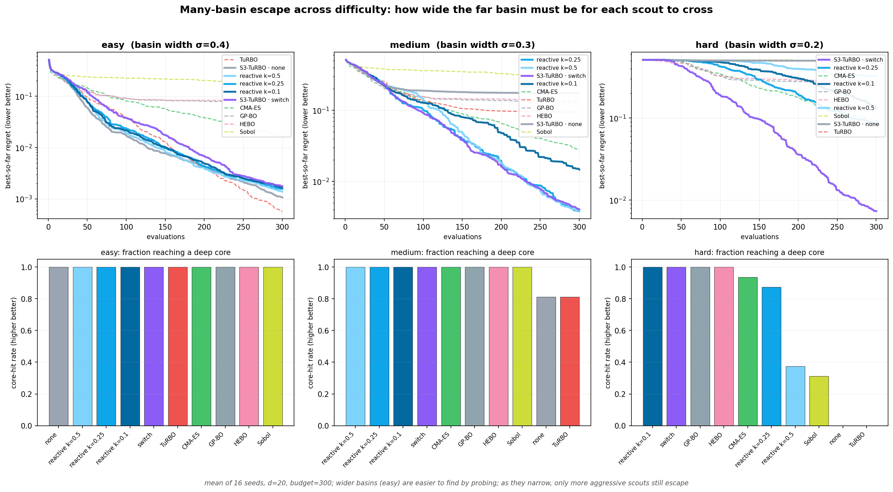
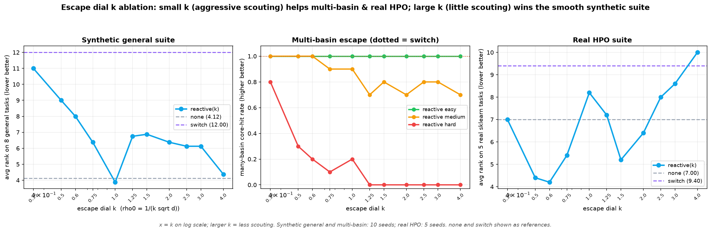
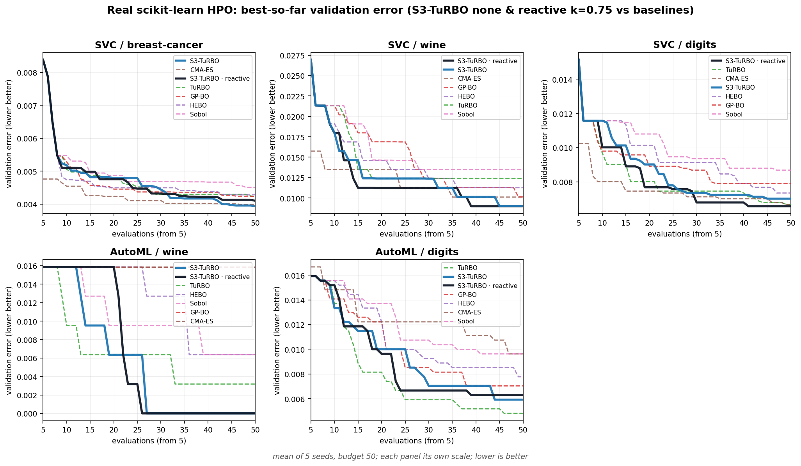

Expensive optimization problems in 20 to 30 dimensions often share an awkward shape: a decent starting
configuration is known, only a few coordinates matter at a time, and the good configurations form many
separated islands, some of which hide a much better narrow core. A single trust region exploits the
start well but can provably never leave its basin. A global surrogate reaches everywhere but exploits
nothing. This page describes a method that keeps the trust-region core and adds the two missing
capabilities as independent, composable axes: a mask that decides which
coordinates a local step moves, and a scout that decides how distant basins are reached.
Both are made adaptive. The mask learns its own shape from the run. The entire escape axis collapses to
one derived dial, escape_k: the base scout rate is
\(\rho_0 = 1/(\texttt{escape\_k}\sqrt d)\), so a large escape_k behaves like pure local
search on a smooth funnel and a small one behaves like an aggressive multi-basin escape: a single
continuous knob spanning the whole axis. At its default escape_k=0.75 the shipped optimizer
runs the reactive scout, which spends that derived base rate always and lets the
outcome of already-planted candidates reallocate it up or down (it never claims to detect a far
basin from local data, which is impossible). The default configuration ranks first on real
scikit-learn hyperparameter tuning, ahead of every baseline, and is second only to pure-local on
a smooth synthetic suite, measured against CMA-ES, GP-BO, HEBO, TuRBO and Sobol. The page you are
reading lets you watch every mechanism run live.
1The problem
Minimize an expensive black box \(f:[0,1]^d\to\mathbb R\) with \(d\) around 20 to 30, from a batch-sequential oracle that evaluates \(q\) points per round inside a total budget of \(B\) evaluations.
Four structural assumptions describe the target regime:
These assumptions pull against each other. A1 and A2 demand hard local exploitation near \(x_0\). A4 demands a nonzero probability of leaving the current basin. A3 demands that a local step move only a few coordinates. They are three separate requirements, and the method meets them with three separate mechanisms: a local surrogate (§2), a coordinate mask (§3), and a scout (§4).
2Base method and its structural limit
The base is trust-region Bayesian optimization in the style of TuRBO (Eriksson et al., 2019). Keep a box around the best point, fit a GP on the data inside it, propose the next points from that surrogate, and resize the box from feedback: grow it after a run of improvements, shrink it after a run of failures.
Proposals come from a discretized, batch form of Thompson sampling rather than the textbook one-point rule. At each ask, lay down a finite candidate pool inside the box (a quasirandom Sobol set), draw \(q\) independent function realizations from the GP posterior restricted to that pool, and take the pool-minimizer of each realization. The \(q\) minimizers are the batch. Fixing the region \(R\) with center \(c\) at its best point:
$$ \kappa_R:\ X = c + r,\ \ r\sim\mathcal U\big(\mathrm{Box}(R)-c\big);\qquad \mathrm{TS}_q(R;\mathcal D)=\Big\{\arg\min_{x\in P}g^{(k)}(x)\Big\}_{k=1}^{q},\ \ P\sim\kappa_R^{\otimes N},\ \ g^{(k)}\sim\Pi(\cdot\mid\mathcal D_R). $$The box adapts through a success counter \(s\) and a failure counter \(\phi\):
$$ \ell\leftarrow\min(\ell_{\max},2\ell)\ \text{ if } s\ge\texttt{succ\_tol};\qquad \ell\leftarrow\max(\ell_{\min},\ell/2)\ \text{ if } \phi\ge\texttt{fail\_tol}. $$Thompson sampling earns its place for two reasons. First, it carries no acquisition trade-off constant: expected improvement and UCB both need a term that balances exploration against exploitation, and in high dimension that balance is exactly what goes wrong. A Thompson draw selects each point in proportion to its posterior probability of being the minimizer, so the balance is inherited from the surrogate's own uncertainty. Second, it gives batch diversity for free: the \(q\) realizations are independent, so their minimizers naturally spread across the plausible optima with no constant-liar or penalization heuristic. Everything added later must preserve this knob-free property.
The limitation of the base is structural, not statistical. Once the box collapses onto one basin, a strictly better basin outside it has probability exactly zero of ever being sampled:
If \(\mathrm{Box}(R)\subseteq B_i\) and \(\operatorname{dist}(B_i,B_j) \gt \ell/2\) for a better basin \(B_j\), then under the base method \(\Pr[X\in B_j]=0\) for the next proposal \(X\).
Proof
\(X\in\mathrm{Box}(R)\) almost surely, so \(\lVert X-c\rVert_\infty\le\ell/2\). For any \(z\in B_j\), \(\lVert z-c\rVert\ge\operatorname{dist}(B_i,B_j) \gt \ell/2\ge\lVert X-c\rVert\), hence \(X\neq z\) and \(X\notin B_j\) almost surely. ∎
So far-basin discovery is impossible without an external channel, which is exactly what the scout axis supplies. A second, independent weakness is that the base kernel perturbs every coordinate at one shared width, the wrong step under heterogeneity (A3), and that is what the mask axis repairs. The two fixes are orthogonal in the strict sense: any mask composes with any scout.
3Axis 1: the local move
A raw candidate \(r\) sits somewhere in the box. Rather than take it wholesale, each coordinate of \(r\) is mixed toward the region center \(c\) by a weight \(\alpha_j\in[0,1]\): weight one takes the box value, weight zero keeps the center, in between takes a partial step. A move is a law over the weight vector, replacing the base kernel by the masked kernel
$$ \kappa_R^m:\quad X = c + \operatorname{diag}(\alpha)\,(r-c),\qquad r\sim\mathcal U(\mathrm{Box}(R)),\quad \alpha\sim M_m\big(\rho(v_R)\big), $$with three laws, each of expected active mass \(\mathbb E\sum_j\alpha_j=\rho d\):
$$ \text{dense: }\alpha_j=1;\qquad \text{hard: }\alpha_j\overset{\text{iid}}{\sim}\mathrm{Bernoulli}(\rho);\qquad \text{soft: }\alpha=\tfrac{\rho d}{\sum_j m_j}\,m,\ \ m_j\overset{\text{iid}}{\sim}\mathrm{Beta}\big(\rho c_0,(1-\rho)c_0\big),\ c_0 \lt 1. $$Dense moves every coordinate (the plain TuRBO move). Hard moves a random subset fully and freezes the rest. Soft draws each weight from a polarized Beta law: with \(c_0 \lt 1\) most mass sits near 0 or 1, so it keeps the mostly-frozen character of sparsity, yet it stays continuous, so it can also take a small coordinated step, and its effective dimension varies smoothly with \(\rho\). The three laws are one family:
As \(c_0\to0^{+}\) with mean \(\rho\) fixed, \(M_{\text{soft}}(\rho)\Rightarrow M_{\text{hard}}(\rho)\); and \(M_{\text{soft}}(1)=M_{\text{dense}}\) almost surely.
Proof
With mean fixed at \(\rho\) and \(c_0\to0^{+}\), the density \(\propto x^{\rho c_0-1}(1-x)^{(1-\rho)c_0-1}\) diverges at both ends, concentrating mass on \(\{0,1\}\) with \(\Pr[m_j=1]\to\rho\), i.e. \(\mathrm{Bernoulli}(\rho)\); the renormalizer tends to \(\rho d/(\rho d)=1\). At \(\rho=1\) both Beta parameters force \(m_j=1\). ∎
Whether sparsity helps depends on the space, which is why the move is an explicit choice, not a default:
Let \(f\) have active set \(A\) of size \(d_{\mathrm{eff}}\) (coordinates outside \(A\) do not change \(f\)). A \(\rho\)-sparse step leaves every irrelevant coordinate unmoved with probability \((1-\rho)^{d-d_{\mathrm{eff}}}\), versus 0 for a dense step. Hence when \(d_{\mathrm{eff}}\ll d\) (A3), a sparse step is far more likely to be supported on \(A\), while at \(d_{\mathrm{eff}}=d\) freezing any coordinate only removes a usable direction.
Proof sketch
Improvement requires a favorable move within \(A\); perturbing coordinates outside \(A\) adds variance to the surrogate's credit assignment without changing \(f\). Sparse masking raises the probability of a clean step supported on \(A\) precisely when \(A\) is small, and is pure loss of freedom when \(A\) is everything. ∎
The move is a pure function of \(\rho\) and \(d\), so new laws drop in without touching the rest of the method. The most important such law is the one that removes the choice entirely.
The adaptive soft mask: learn the mask from the run
The soft law has two shape parameters: the active fraction \(\rho\) (how many coordinates a move perturbs) and the concentration \(c_0\) (how polarized). The adaptive soft mask leaves \(\rho\) at its derived value \(1/\sqrt d\) and learns only \(c_0\), from a running record of which coordinates have paid off. The asymmetry is deliberate: \(\rho\) already has a good schedule derived from \((d,B,q)\), and an ablation found that deriving \(\rho\) online is worse; \(c_0\) has no such prior, so learning it helps. It is the default mask, and the best-ranked mask in the ablation below.
Every coordinate carries a credit \(s_j\), an exponential-memory estimate of the improvement attributable to moving it. Each improving point casts its normalized improvement, distributed over coordinates by its squared realized displacement \(\delta_{ij}=|u_{ij}-c_j|\) (not by the mask weight \(\alpha\), which is coordinate-symmetric for the soft law and carries no per-coordinate signal):
$$ \Delta_i=\frac{\max(0,\ y_\star-y_i)}{S_y},\qquad s_j\leftarrow\lambda\,s_j+\sum_i \Delta_i\,\frac{\delta_{ij}^2}{\sum_k \delta_{ik}^2}. $$The concentration then reads the sharpness of the credit and sets \(c_0\):
$$ p_j=\frac{s_j}{\sum_k s_k},\qquad C=1-\frac{H(p)}{\log d},\quad H(p)=-\sum_j p_j\log p_j,\qquad c_{0,t}=\exp\!\big((1-C)\log c_{\max}+C\log c_{\min}\big). $$If a positive fraction of improving moves are supported on the active set \(A\) of size \(d_{\mathrm{eff}}\), then credit concentrates on \(A\): \(C\to1\) and the concentration \(c_{0,t}\to c_{\min}\), a polarized mask that commits to \(A\), without \(A\) or the regime being supplied.
Proof sketch
Coordinates outside \(A\) take only an incidental squared-displacement share of the credit, which decays under \(\lambda\); coordinates in \(A\) that had to move for the improvement take the dominant share on every \(A\)-supported improving move. The in-\(A\) to out-of-\(A\) credit ratio therefore grows, so \(p\) concentrates on \(A\) and \(C\to1\); the continuous concentration map gives \(c_{0,t}\to c_{\min}\). ∎
The two ends are the design. With no evidence (\(C\to0\)) the mask stays soft and wide, still probing which coordinates matter; once credit concentrates (\(C\to1\)) it sharpens toward a hard, polarized mask on the learned active set. It walks the soft \(\leftrightarrow\) hard edge of the family (Proposition 2) in the direction the data points, and reduces exactly to the fixed soft mask when credit is uninformative, so it never degrades the static path. Watch the credit concentrate and \(c_0\) sharpen below.
4Axis 2: the scout
The scout is the escape channel that Proposition 1 makes mandatory. In practice a scout proposal rarely produces the incumbent improvement itself, since local steps do that; its role is coverage insurance, keeping the probability of reaching a distant useful basin above zero at low cost to local exploitation. A scout strategy is a triple of a tick (fire a scout this ask?), a promotion rule (turn an observation into a candidate region?), and an allocation (split the \(q\) slots across regions and moves):
$$ \pi(\mathcal R_t,t)=[\,t\equiv0\ (\mathrm{mod}\ p)\,]\ \lor\ [\,\text{no improvement}\ge\texttt{stag}\,], $$ $$ \mathrm{prom}(u,y,\mathcal R)=\Big[\min_{R}\tfrac{\lVert u-c_R\rVert}{\sqrt d}\ge\delta\Big]\ \wedge\ \Big[\,y\le Q_a(\mathbf y)\ \lor\ y\le\min\mathbf y+c\,S_y\,\Big]. $$
The headline strategies (none, random, switch,
reactive) differ only in these three functions. (A fifth internal base class,
sidecar, supplies the protected-main-plus-side-channel scaffolding that switch and
reactive build on; it is not a strategy a user selects.)
| strategy | mines the archive | allocation on a tick | focus burst |
|---|---|---|---|
none | no | \(q\) local on the single region | no |
random | yes | \(q-1\) local + 1 far probe | no |
switch | no | \(q-s\) local on the protected main + \(s\) side slot, unless a focus episode is active | \(q-1\) dense in the candidate + 1 protected main, for a bounded window |
reactive (default) | no | same scaffolding as switch, but the tick fires at the \(k\)-derived rate \(\rho_0\), scaled up by evidence | evidence-gated: armed only once the escape value clears half \(\rho_0\) |
A far probe is the pool point farthest from all data, \(u^\star=\arg\max_{u}\min_i\lVert u-u_i\rVert\). The escape channel is what makes distant basins reachable at all:
Let \(\mu_t\) be the probability that a scout slot at ask \(t\) lands in \(\bigcup_k B_k\), and \(\rho_t\) the fraction of ask-\(t\) slots that are scout slots. Then
$$\Pr[\text{some scout reaches a useful basin by ask }T]\ \ge\ 1-\prod_{t=1}^{T}(1-\rho_t\mu_t).$$
For none, \(\rho_t\equiv0\) and the bound is 0, consistent with Proposition 1. For any
strategy with a periodic tick, \(\rho_t\ge s/(pq) \gt 0\), so the floor is strictly positive and tends
to 1 as \(T\to\infty\) whenever \(\inf_t\mu_t \gt 0\).
Proof
The complementary event, no scout ever lands, factorizes across ticks with per-ask non-landing probability at most \(1-\rho_t\mu_t\); take the product and complement. ∎
Candidate regions and importance
The multi-region strategies keep one main region on the incumbent and a few candidates. A candidate is created only if it is genuinely far from existing regions (novelty radius \(\delta\)) and passes the value gate; it first takes a few cheap probes, then fits its GP on only its own local data, so it explores its own basin instead of inheriting the incumbent's. This region-local training is the single most important implementation detail. When there are too many regions, the least valuable is dropped, with youth and distance rewarded so a promising far region is not starved:
$$ \mathcal I(R)=\hat y_R-\beta\,S_y\sqrt{\tfrac{\log(n_t+2)}{v_R+1}}-\eta\,S_y\,\nu(R),\qquad \nu(R)=\min_{R'\neq R}\tfrac{\lVert c_R-c_{R'}\rVert}{\sqrt d}. $$Why the scout must be conditional and asymmetric
On a deliberately hard structure (many look-alike basins, a few hiding narrow cores, a start planted
off-core), the exploration designs separate cleanly. Serving all basins equally achieves the best
coverage but the worst final value: it over-explores and under-polishes. A strictly bounded
sidecar side channel protects the local path and ties the strong baselines, but it still
misses cores, because it never concentrates enough budget on any one candidate. The switch
is the first to reach a core, because it concentrates \(q-1\) slots on one candidate for a
bounded window while keeping one protected main slot. The quantitative reason is a volume argument:
reaching a narrow core of radius \(r_c\ll\ell\) from outside requires
\(\Omega\big((\ell/r_c)^{d_{\mathrm{eff}}}\big)\) concentrated local samples (the shrinking-box
volume ratio). A per-batch budget of \(s\) slots supplies \(O(sT)\) total but only \(O(s)\)
consecutive samples on any one candidate, which is insufficient unless \(s\) is temporarily
raised. The switch burst raises it to \(q-1\) for \(\Theta(f_{\text{focus}}B/q)\) consecutive asks, the
minimal change that makes the required concentration attainable while one main slot stays protected.
The principle: exploration cheap and conditional; intensification temporary, bounded, and evidence-gated.
One dial for the whole escape axis: escape_k
The four discrete scouts span a spectrum, from no escape (none) to strong escape
(switch), but forcing a user to pick a point on that spectrum re-introduces the tuning
problem the method is trying to remove. The shipped optimizer replaces the choice with a
single continuous dial. Every scout's base rate of far probes is derived from one number
\(k=\)escape_k:
A large \(k\) makes \(\rho_0\) tiny, so escape almost never fires and the run is effectively pure local
search (\(\to\) none, the right behavior on a unimodal funnel); a small \(k\) makes \(\rho_0\)
large, so escape fires often and the run behaves like an aggressive multi-basin search (\(\to\)
switch). The default is \(k=0.75\) (recommended range \(0.5\)–\(1.0\)), and
\(\rho_0\), the escape value's memory, and the distinctness radius are all derived (§5); nothing is
tuned. One knob now interpolates the whole axis, and it is the one axis a user usually touches.
The reactive scout: a \(k\)-controlled dose, reallocated by evidence
The default scout, reactive, is the honest version of "adaptive escape". It is important to
state what it does not do: it does not detect a multi-basin landscape from local data.
That is impossible: a local surrogate has never sampled the far basin, so its data cannot reveal
one. Instead reactive always spends the derived base rate \(\rho_0\) set by \(k\) (a
principled, \(k\)-controlled dose of speculative escape), and lets the outcome of candidates it
has already planted modulate that spend. A running escape value \(E\in[0,1]\) rises when a
recently-worked candidate is both spatially distinct from the incumbent (by the derived novelty radius)
and competitive, and decays otherwise. The far-probe rate then interpolates from \(\rho_0\) at no evidence
up toward 1 as \(E\) saturates:
The base rate is the load-bearing term; the evidence value is a bounded reallocation on top of it, and the
expensive commitment (the focus burst), is armed only once \(E\) clears half the base rate, so a single
below-base blip cannot trigger one. The consequence is the useful diagonal behavior: on a genuinely
single-basin landscape no candidate ever proves distinct, \(E\) decays, and reactive
collapses to none; on a multi-basin landscape distinct competitive candidates keep appearing,
\(E\) ramps, and escape spend rises toward switch. Watch all of it happen below.
none, watch
Proposition 1: the cyan box collapses into the start basin and nothing can ever leave. With
random, amber far probes fire every few asks but almost never land anywhere useful. With
switch, a promising candidate triggers a purple focus burst: three of the four
slots concentrate on it for a bounded window, which is what actually reaches a hidden core. The default
reactive runs the same machinery, but its escape rate starts at the derived base
\(\rho_0=1/(k\sqrt d)\) and grows only as planted candidates prove distinct; slide escape_k
down toward \(0.25\) to see it escape eagerly like switch, up toward \(1.5\) to see it stay
home like none. Try race all four on the same landscape and seed.
5Where the constants come from
The governing principle: compute everything from the prior information \((d,q,B,x_0)\) or from the observed data; expose as a knob only a genuine choice. The derivations are arguments, not theorems, and each comes with the reason it is the right rule. A selection:
$$ \rho=\frac{1}{\sqrt d},\quad \ell_{\text{init}}=\ell_{\max}=1,\quad \ell_{\min}=\delta/8,\quad \texttt{fail\_tol}=\max\!\big(4,\lceil\sqrt d/q\rceil\big). $$Active fraction. Under the standard assumption that the active set of a hyperparameter landscape grows like \(\sqrt d\), setting \(\rho d=\sqrt d\), i.e. \(\rho=1/\sqrt d\), matches the expected number of moved coordinates to the active-set size: enough freedom to improve, few enough to keep steps clean (Proposition 3). One derived value, no schedule and no clamp; an ablation confirms this flat form is no worse (and slightly better) than the prototype's annealed, clamped version. Trust region. The box side cannot exceed the cube side, so \(\ell_{\max}=1\); starting there and letting failures shrink it means no initial size is chosen. The floor \(\ell_{\min}=\delta/8\) is a resolution: below the novelty radius \(\delta\) the box can no longer separate a candidate. Box patience. Each batch tests \(q\) of the region's \(\sqrt d\) effective directions, so declaring the box too large should take about one failed batch per direction; the floor of 4 guards against reacting to Thompson-sampling noise.
$$ S_y=\max\!\big(\operatorname{IQR}(\mathbf y),\,1.4826\,\operatorname{MAD}(\mathbf y),\,\sigma_{\text{noise}},\,\epsilon\big), \qquad \delta\approx0.6\sqrt{1/6}\approx0.245. $$Scale-free gates. An absolute margin is meaningless across tasks whose scales differ by orders of magnitude; dividing every gate by the robust scale \(S_y\) turns its coefficients into pure numbers that transfer across tasks. Novelty radius. Two uniform points in \([0,1]^d\) have per-coordinate RMS distance \(\sqrt{1/6}\approx0.408\) independent of \(d\); requiring 60% of that typical distance makes "novel" mean materially separated, not merely numerically distinct.
input: mask m ∈ {dense, soft, hard, adaptive}, scout Σ ∈ {none, random, switch, reactive}, escape_k (default 0.75), tr_update ∈ {batch, point}, problem (d, q, B), optional x0, risk derive: n_init, pool N, max_data, ρ = 1/√d, ρ₀ = 1/(escape_k·√d), (ℓ_init, ℓ_min, ℓ_max), succ_tol, fail_tol, scout period p, stag, max_regions, δ, focus window while |D| < B: S_y ← robust_scale(y) for R in regions: adapt_box(R) if |D| < n_init: ask quasirandom warmup; tell; continue batch, roles ← Σ.allocate(regions, q) # each slot: masked local TS, probe, or burst y ← f(batch); D ← D ∪ (batch, y) Σ.tell(batch, y, roles) # promote / mine / focus / prune return argmin over D
Three discrete choices remain, all regime declarations about the landscape that no prior or posterior can
decide: the mask \(m\) (Proposition 3 shows the right move depends on whether the space is isotropic),
the scout \(\Sigma\) (Proposition 1 versus the volume argument shows how much escape is warranted is
regime-dependent), and the trust-region update granularity: per-batch success/failure
counting (standard TuRBO) shrinks the box slowly and wins multimodal landscapes, per-point counting
shrinks up to \(q\) times faster and wins smooth convex valleys. Neither dominates, so it is a knob with
batch as the safe default. In practice the mask self-selects (the adaptive mask learns its concentration
online, §3), and the escape axis is a single continuous dial (§4): the default reactive scout
reads its base rate off escape_k, so the one thing a user usually touches is that one number.
The remaining surface is budget, a one-word risk level, and an optional value or
noise scale.
6What the benchmarks show
The shipped default is the adaptive mask (§3) with the reactive scout at
escape_k=0.75 and per-batch trust-region updates. Three suites ask three different questions.
The synthetic-general suite (eight smooth tasks: Hartmann6 \(d=6\); Ackley, Griewank,
Powell, Rastrigin, Levy, Rosenbrock, Styblinski-Tang at \(d=25\); budgets 120–200, \(q=4\), 6 seeds; lower
is better, ranked per task) asks whether the method beats prior work and whether the mask axis carries its
weight. The multi-basin suite asks what the escape axis buys where a local search is
genuinely trapped. And the real-HPO suite asks whether the default configuration wins on
landscapes that mix both. Every panel is one task at its own scale, ranked by that task's final value, one
color per method.
Against prior work (synthetic general)
On the eight smooth general tasks the escape axis has nothing to escape, so the best S3-TuRBO variant is
pure-local none (large-\(k\) behavior), with the default
reactive a close second, both ahead of every external baseline (TuRBO, CMA-ES, and the
global-GP methods GP-BO and HEBO, which collapse in 25 dimensions, and Sobol). This is the expected end of
the diagonal: on a unimodal funnel, spending any budget on escape is spending it on budget the local search
would otherwise use.
| method | avg rank ↓ |
|---|---|
| S3-TuRBO · none (pure local) | 2.00 |
| S3-TuRBO · reactive (default) | 2.38 |
| TuRBO | 3.00 |
| CMA-ES | 3.63 |
| GP-BO | 5.13 |
| HEBO | 5.25 |
| Sobol | 6.63 |

Every panel draws two S3-TuRBO lines: pure-local none (grey) and the recommended
reactive escape at escape_k=1 (black), against the external baselines. On the
smooth tasks the two nearly coincide, so the escape axis costs almost nothing; on the many-basin panel
none stays trapped with the local baselines while the escape reaches the deep core.
switch (the aggressive escape, purple) is shown too: worse on the smooth tasks, but it dives
to the core on many-basin. The escape axis pays off exactly on the task that needs it.
The mask axis (ablation)
Holding the scout at random and the update at batch and varying only the mask
isolates the local-move contribution. Every mask beats the no-mask (dense) baseline (Proposition 3 in
practice), and the adaptive mask ranks best without being told the regime. The margin over the fixed masks
is narrow, so a matching fixed mask is an equally good choice when the regime is known; the fixed masks are
kept as reference configurations, not the recommended path.
| mask | avg rank ↓ |
|---|---|
| adaptive | 1.78 |
| hard | 2.11 |
| soft (fixed) | 2.11 |
| dense (no mask) | 4.00 |

The scout axis (ablation)
The escape axis only shows itself where a local search is genuinely trapped. The many-basin task supplies that: the start basin is shallow, the deep basins sit far across a high plateau, and reaching one needs a jump, not a walk. How hard that jump is depends on the basin width \(\sigma\), so sweeping easy (\(0.40\)) → medium (\(0.30\)) → hard (\(0.20\)) turns escape from trivial into scout-only (\(d=20\), budget 300, 16 seeds; core-hit = the incumbent ends in a deep core):
| method | easy σ=0.40 | medium σ=0.30 | hard σ=0.20 |
|---|---|---|---|
| switch | 0.001 / 100% | 0.005 / 100% | 0.007 / 100% |
| sidecar | 0.002 / 100% | 0.158 / 81% | 0.500 / 0% |
| random | 0.001 / 100% | 0.174 / 81% | 0.500 / 0% |
| none | 0.001 / 100% | 0.174 / 81% | 0.500 / 0% |
| CMA-ES | 0.017 / 100% | 0.028 / 100% | 0.092 / 94% |
| TuRBO | 0.000 / 100% | 0.094 / 81% | 0.500 / 0% |
| GP-BO | 0.075 / 100% | 0.131 / 100% | 0.286 / 100% |
| Sobol | 0.184 / 100% | 0.303 / 100% | 0.495 / 31% |
The gradient is the point. On easy every method reaches a core, even a plain local search,
because the basin is wide enough to fall into. On medium the strategies fan out: only
switch still solves it cleanly, the bounded sidecar side channel begins to help
over none, and the global samplers stay competitive. On hard only
switch crosses among the trust-region methods, matching the global samplers (CMA-ES, GP-BO)
that explore by construction and beating them on depth. The lighter scouts fire far probes but never
concentrate enough budget on one to descend a narrow far basin; only switch's focus burst is
aggressive enough for the hard jump. So the scout's value is regime-dependent: random is cheap
coverage insurance, switch is the tool for hidden far cores, and the escape_k
dial lets the default reactive scout move continuously between the two.

The escape dial (k ablation)
Sweeping escape_k alone, with everything else fixed, traces the whole escape axis with a
single number. A large \(k\) barely scouts and behaves like none; as \(k\) shrinks the base
rate \(\rho_0=1/(k\sqrt d)\) grows and escape becomes progressively more aggressive. On the multi-basin
family, smaller \(k\) escapes narrower cores: the harder the jump, the smaller the \(k\)
needed, and at \(k=0.1\) the dial matches discrete switch on the hardest core. The default
\(k=0.75\) sits in the middle of the recommended \(0.5\)–\(1.0\) band, escaping enough for mixed real
landscapes without over-exploring smooth ones.

Real HPO tasks: the default wins
The synthetic suites isolate mechanisms; real landscapes mix them. On genuine scikit-learn hyperparameter
search (SVC tuning on breast-cancer/wine/digits and an AutoML model-family search on digits/wine; 5 tasks,
5 seeds, budget 50; metric = validation error, lower is better), the default
reactive scout at escape_k=0.75 ranks first overall (avg rank 1.80), ahead of
pure-local none and every baseline. The AutoML model-family choice makes those landscapes
genuinely multi-basin, exactly the regime the escape axis is for; on the smooth SVC/breast-cancer landscape
the default reactive spend still tracks the pure-local best, because a redundant candidate lets its escape
value decay back toward none.
| task | S3-TuRBO (reactive, k=0.75) | S3-TuRBO (none) | TuRBO | GP-BO | HEBO | CMA-ES | Sobol |
|---|---|---|---|---|---|---|---|
| SVC / breast-cancer | 0.00410 | 0.00389 | 0.00426 | 0.00422 | 0.00421 | 0.00397 | 0.00447 |
| SVC / wine | 0.00789 | 0.00900 | 0.01237 | 0.00898 | 0.01126 | 0.01011 | 0.01011 |
| SVC / digits | 0.00657 | 0.00690 | 0.00634 | 0.00779 | 0.00712 | 0.00646 | 0.00768 |
| AutoML / digits | 0.00481 | 0.00519 | 0.00444 | 0.00704 | 0.00778 | 0.00926 | 0.00815 |
| AutoML / wine | 0.00000 | 0.00000 | 0.00317 | 0.01270 | 0.00635 | 0.01587 | 0.00635 |
| avg rank ↓ | 1.80 | 2.20 | 3.60 | 4.80 | 4.80 | 4.40 | 5.80 |

Three suites, one diagonal
Reading the three suites together gives the whole story of the dial. Each suite is won at a different point on the escape axis, and the default sits where the mixed real landscapes are:
| suite | won at | why |
|---|---|---|
| synthetic-general (8 smooth tasks) | large \(k\) → none | unimodal funnels; escape only spends local budget |
| multi-basin (hidden narrow cores) | small \(k\) → switch | only a concentrated burst descends a far core |
| real scikit-learn HPO (5 tasks) | \(k=0.75\) (default) | mixed landscapes; the middle of the dial ranks first |
No single point on the dial wins all three, which is exactly why the escape axis is a continuous knob and not a fixed constant. The default \(k=0.75\) is chosen to win the suite that most resembles the target application (real hyperparameter tuning) while staying a close second where pure-local is optimal.
7Choosing a configuration
The default is adaptive · reactive · batch at escape_k=0.75: the adaptive mask
self-selects, batch trust-region updates are the default, and the escape axis is the reactive
scout reading its base rate off escape_k. In the common case a user sets nothing at all, or at
most turns the single escape_k dial. The cards below are the useful settings of that one dial,
plus the discrete escape it interpolates between.
none, on a multi-basin one escape ramps up. It never predicts a far basin (a local search cannot).escape_k in the recommended 0.75–1.0 band. Larger k leans toward pure-local for smooth funnels; the default 0.75 is the all-round pick.escape_k down to 0.5 or below to raise the base escape rate. Smaller k escapes narrower cores; near k = 0.1 the dial matches discrete switch.switch scout commits the focus burst unconditionally. The only scout that survives the hardest jump, but it over-explores on smooth tasks, so use it only when the hidden-core regime is certain.
The remaining scouts are reference points on the same axis: none is the large-\(k\) limit
(pure local, the behavior to beat on a smooth funnel), and random is a weak periodic far probe
kept as cheap coverage insurance. The fixed masks (dense, hard,
soft) and the legacy named presets (balanced, rugged, …) are kept as
static reference configurations for the ablation; pick one only when the regime is fully known and a
frozen setup is wanted.
Every result agrees on one point: a plain local trust-region search with no escape is the behavior to
beat, not the method to ship, for the heterogeneous many-basin regime, yet it is the right choice
when the landscape really is a single smooth funnel, which is exactly why the escape axis is a continuous
dial rather than an on/off switch. The default reactive scout at escape_k=0.75
sits where mixed real landscapes are best served, and decays to pure-local on its own when the evidence
says to.
8Limits and open directions
The switch advantage rests on a hard-case synthetic family and modest seed counts; it is a real effect on its target metric, narrow-core hits, but "wins one regime" is not "wins in general," and only the former is claimed. Selective moves are conditional by Proposition 3, which is why the move is an explicit axis rather than a default. High observation noise degrades local and scout ranking, and broader-exploration methods can overtake; a noise-aware variant (duplicate-based noise detection gating repeated confirmation) is designed but not adopted, because always-on confirmation hurts the clean case. Vector-valued multi-objective scouting is a promising but unfinished extension. Two directions are open research: switching the move or scout during a run as the landscape reveals itself, and selecting the initial configuration automatically from cheap early probes.
Citation
If this method or page is useful in your work, please cite:
Related reading. TuRBO: Eriksson, Pearce, Gardner, Turner, Poloczek, Scalable Global Optimization via Local Bayesian Optimization, NeurIPS 2019. Thompson sampling: Thompson 1933; Russo et al., A Tutorial on Thompson Sampling, 2018. HEBO: Cowen-Rivers et al., 2022. CMA-ES: Hansen and Ostermeier, 2001.